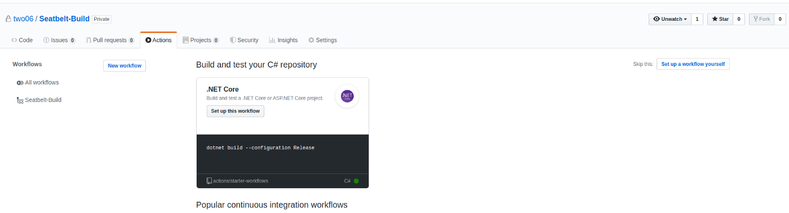
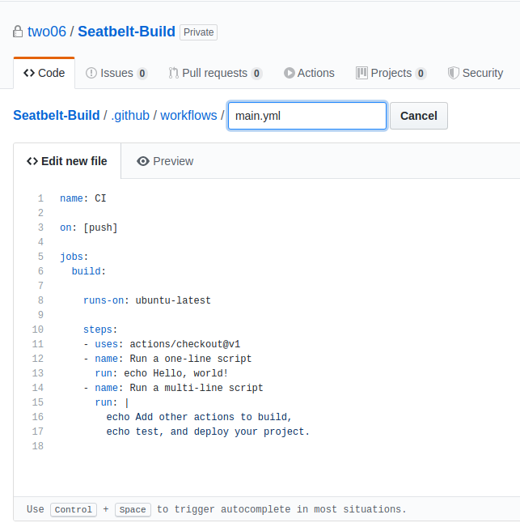
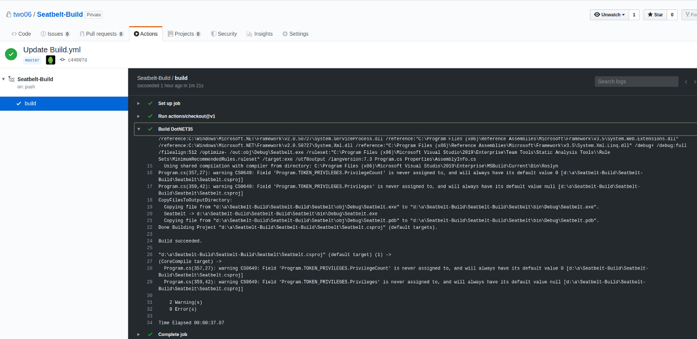
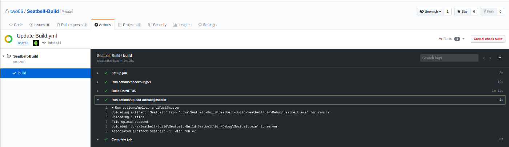
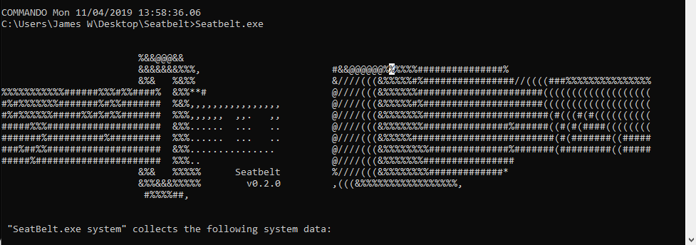
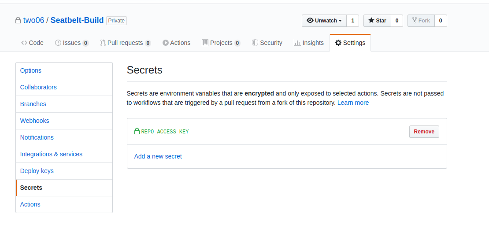
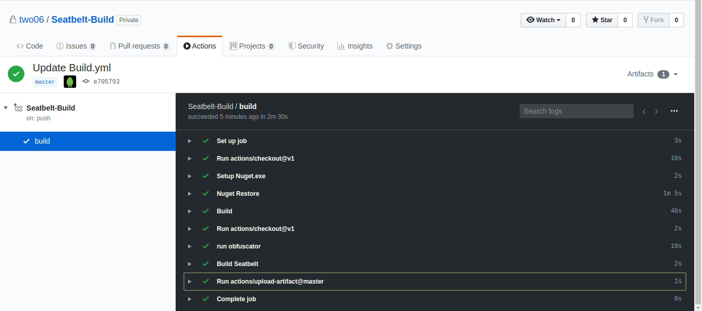
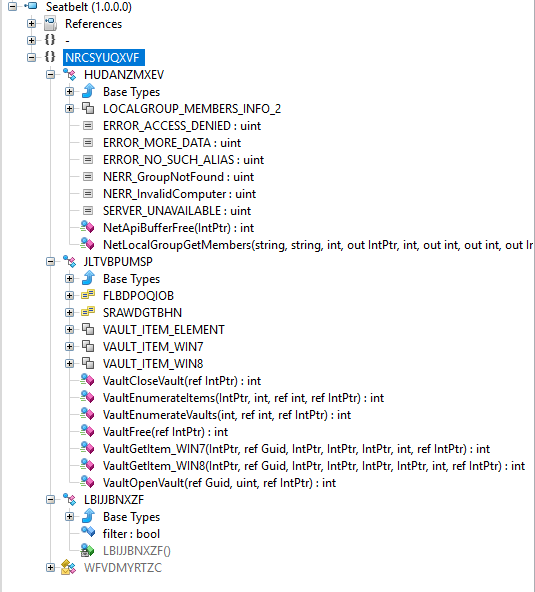
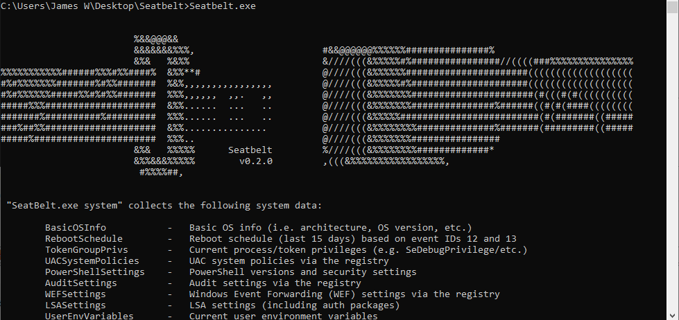

Earlier this year, XPN posted a blog about using Azure DevOps. With the up-coming release of GitHub Actions, I thought now would be a good time to look at how to implement some of this functionality using Actions. Following XPN’s lead (and definitely not because I wrote a chunk of this post before realizing…), we will use Seatbelt, part of the GostPack suit of tools, for this post. First off, to protect our build scripts, we want to create a private clone of the Seatbelt repo. This isn’t as easy as it should be — you can’t mark a forked repo as private in GitHub. Instead, we need to create a clone of the repo, then push it to a new, private repo under our GitHub account. Following the steps outlined here, we first create a bare clone of the repo: 1$ git clone --bare https://github.com/GhostPack/Seatbelt.git We can then push this to a new, private repo (this has to be set up before hand). 12$ cd Seatbelt.git$ git push --mirror https://github.com/two06/Seatbelt-Build.git With our private copy of the Seatbelt project, we need to start configuring our Actions. Within the GitHub UI, select the actions tab and create a new workflow. You’ll get a window similar to this:  Seatbelt targets .NET 3.5. Actions doesn’t currently have a predefined workflow for .NET outside of the suggested .NET core workflow. Luckily, we can define our own. Select the “Set up a workflow yourself” option and you will be presented with an editor window.  We need to build our application using MSBuild, on a Windows host. We can use the “windows-latest” tag to specify that this job runs on Windows server. The “actions/checkout@v1” step will pull the current repository to the build server, ready for us to build. A bit of googling leads us to this post, which includes the run command we need to access MSBuild: 123run: | cd "C:\Program Files (x86)\Microsoft Visual Studio\2019\Enterprise\MSBuild\Current\Bin\" .\MSBuild.exe $Env:GITHUB_WORKSPACE\pathtoyoursolutionorproject This is a multi-line run command which executes MSBuild against the path to our .csproj file, within the GITHUB_WORKSPACE environment variable. This is just the path to where the checkout step drops our code. Putting this all together we end up with something like this: 1234567891011name: Seatbelt-Buildon: [push]jobs: build:runs-on: windows-lateststeps: — uses: actions/checkout@v1 — name: Build DotNET35 run: | cd “C:\Program Files (x86)\Microsoft Visual Studio\2019\Enterprise\MSBuild\Current\Bin\” .\MSBuild.exe $Env:GITHUB_WORKSPACE\Seatbelt\Seatbelt.csproj Commit this change, which will also trigger the action (thanks to the on: push trigger). Clicking in to the Actions menu then on the Action name itself will display the progress of the build.  If all goes well, you should see green ticks for every step. If not, the output window will contain the details of any errors under the relevant step. Ok, we successfully built a Windows binary, without needing Visual Studio. There’s just one problem… we can’t download the EXE. Actions don’t automatically make their output available via the GitHub UI, we need to add another step to achieve this using the slightly confusingly named upload-artifact and download-artifact actions. Upload-artifact is used to upload files from the build server to GitHub. We need an upload-artifact action to allow us to download our compiled EXE. This action takes the path to the file we want to upload, and a name. The path we can get from the output of our MSBuild step (note that this is relative to the GITHUB_WORKSPACE directory). The name doesn’t matter, so I’ve called it “seatbelt”. Adding these change to our .yml file gives us the following: 12345678910111213141516name: Seatbelt-Buildon: [push]jobs: build:runs-on: windows-lateststeps: — uses: actions/checkout@v1 — name: Build DotNET35 run: | cd “C:\Program Files (x86)\Microsoft Visual Studio\2019\Enterprise\MSBuild\Current\Bin\” .\MSBuild.exe $Env:GITHUB_WORKSPACE\Seatbelt\Seatbelt.csproj — uses: actions/upload-artifact@master with: name: Seatbelt path: Seatbelt\bin\Debug\Seatbelt.exe Committing the changes will trigger another build. Once completed, we now have access to the artifacts menu:  Downloading the artifact and running it on a Windows VM shows that our build is working correctly:  We can now build our tooling using GitHub Actions, without the need for a copy of Visual Studio. Unfortunately, Seatbelt, like most offensive tooling, is flagged by Defender. We can run it in the above screenshot because I’m using a Commando VM, which disables Defender. Let’s see if we can add some build steps to obfuscate our tooling. For this step, I’ll be using a repo containing some obfuscation code, including this example from XPNs post. As far as I can tell, Actions doesn’t currently have a way to bring in compiled artifacts from other repos. To get around this, we will need to add a new job to our .yml file to pull and compile the repo containing our obfuscation project. This job will also need to restore NuGet packages and access a private repo. As build tasks run on an ephemeral server, we have to supply credential to allow access to private repos. The build agent has no access to our GitHub account and wont be able to see the private repo if we don’t. To do this, we generate new Personal Access Token (PAT) and store it as a secret in our repository.  We can then access that token from our Action, without having to hard-code credentials. The ref key is important; without this the checkout will fail with a “reference is not a tree” error. 12345uses: actions/checkout@v1 with: repository: two06/Obfuscators ref: refs/heads/master token: ${{ secrets.REPO_ACCESS_KEY }} Restoring NuGet packages can be achieved using an action available from the marketplace. The first command adds NuGet to our path, then we run the restore option against our solution file. There’s a slight gotcha here, checking out the Obfuscators creates a directory in d:\a\Seatbelt-build\ while we are working in d:\a\Seatbelt-build\Seatbelt-build. We need to pass the correct path to the restore command, or our build will fail. 1234- name: Setup Nuget.exe uses: warrenbuckley/Setup-Nuget@v1- name: Nuget Restore run: nuget restore $Env:GITHUB_WORKSPACE\..\Obfuscators\Obfuscators.sln With these additions in place, we can continue to build the project and upload the generated artifact. Uploading lets us access the artifact in a later build step. There’s another slight gotcha here, the upload action doesn’t appear to respect relative paths, so $Env:GITHUB_WORKSPACE..\Obfuscators\ won’t work. We need to pass it the full path. Our complete build code for this job now looks like this: 123456789101112131415161718192021222324build_obfuscators: runs-on: windows-latest steps: — uses: actions/checkout@v1 with: repository: two06/Obfuscators ref: refs/heads/master token: ${{ secrets.REPO_ACCESS_KEY }} — name: Setup Nuget.exe uses: warrenbuckley/Setup-Nuget@v1- name: Nuget Restore run: nuget restore $Env:GITHUB_WORKSPACE\..\Obfuscators\Obfuscators.sln — name: Build run: | cd “C:\Program Files (x86)\Microsoft Visual Studio\2019\Enterprise\MSBuild\Current\Bin\” .\MSBuild.exe $Env:GITHUB_WORKSPACE\..\Obfuscators\Obfuscators\Obfuscators.csproj — name: Upload uses: actions/upload-artifact@master with: name: Obfuscators path: d:\a\Seatbelt-Build\Obfuscators\Obfuscators\bin\Debug\Obfuscators.exe The obfuscator we are going to use renames classes within the target solution. We pass it the path to a solution file and it performs an in-place rename. This must occur before the target solution is built. This means we need to modify our build config to perform the following tasks in order: Fetch and build the obfuscator project Fetch the Seatbelt project Run the compiled obfuscator against the Seatbelt solution Build the modified Seatbelt solution Upload the artifact The obfuscator project has a large number of dependencies, thanks to its reliance on Roslyn. As we are running the two build tasks in different jobs, the dependencies are lost when we upload and download the complied artifact. We could use something like Fody to generate one, big EXE, but a far simpler option is to merge all our build jobs into one. This also lets us remove an upload and download step. With our changes applied, end up with our final build config: You may notice there are some inconsistencies with the way I’ve defined paths in this script. There appear to be a few issues with relative paths and environment variables, depending which actions you use; this is a beta release of Actions after all. When triggered, this build will generate an artifact with random class names.  We can check the class names actually changed using iLSpy.  We can then run the new binary, just to check it still works.  This basic obfuscation isn’t enough to get the binary past Defender, but hopefully the process shown here goes into enough detail for you to start using GitHub Actions to build your own tooling. A quick note on triggers… There are a few different ways to trigger a build using Actions. The one we have been using for this post is a push trigger, which is fired whenever change are pushed to the repo. Actions does not currently have a way to manually trigger a build, which seems like quite a big omission. For now, I’m triggering builds by modifying readme files via the GitHub UI. ← Previous Post Next Post→